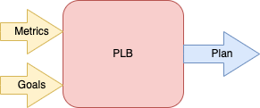

On Shard Placements And Load Balancing (PLB)
We use a distributed storage system when the data is too large to fit in a single machine or host. The system designer gets around it by partitioning the data into manageable chunks called shards or partitions. This is where our problems begin. I will not discuss the schemes to partition data but given the shards, how we can distribute them among the available hosts. The objective would be to drive similar utilization among all the hosts.
For example, say, I have 100 hosts upholding my cloud storage service. 2 of them are running at 100% CPU and the rest at 30%. This is a recipe for disaster. Now I must remedy the situation. The system cannot route any request to any host. The destination must be the one that has data relevant to the request. Therefore, one likely reason for this imbalance is that these two hosts have the most number of shards (skew in shard assignment) or few of the most requested shards. Therefore, shard placement is the key to driving uniform utilization. The CPU was an example, the contended resource might be memory, IO, or other application-specific metrics. Usually, we do not shoot for perfect equality, but rather an optimum band. This is usually application-dependent but something like 50-70% utilization is good. It has enough headroom to allow minor peaks while more hosts are added. The other end of the spectrum is say, all 100 of my servers are running at 10% CPU. This is an opportunity to reduce the host count without impacting the service quality. This will decrease the operating cost of the service, which means more profit.
With this background, I will define the problem more concretely. My intention
is to build a general-purpose service, which is responsible for placement and
load balancing (PLB as a service). To make it a successful service,
I must arrange all the shards in the minimum possible hosts without violating
the hard constraints (like a primary and replica cannot be on the same
host, or/and there should be no more than 1 primary replica of a shard or there
be no more than 3 secondary replicas of a shard) and meeting the provided
goals (like no host to have CPU utilization greater than 80%, and/or each
a host should have CPU utilization that is no greater or less than the median
CPU utilization across all hosts by 10%, and/ or the count of the primary replica
should be balanced across all hosts). At its core, this is a [bin-packing]
(https://en.wikipedia.org/wiki/ Bin_packing_problem), [problem](https://
developers.google.com/optimization/ pack/bin_packing). Bin-packing is NP- hard and the decision problem of whether the number of shards can fit in
the specified host is NP-complete. I will define the goal in plain
English but you can refer to the [wikipedia link](https://en.wikipedia.org/wiki/
Bin_packing_problem) for a mathematical treatment.
- At least one host must be used
- Along a dimension, the sum of values of all shards placed in a host, is less than the value of the host. A concrete example can be the sum of CPU required by each shard placed in a host should not exceed the total CPU available on the host. We repeat this for all resources we care about like io, network, and the like.
- We tack on application-specific goals similarly.
If I formulate this as an optimization problem subject to constraint, then I can use a constraint solver to find a solution.
A few things to consider:
- The assignment of the shard to the host is dependent on traffic which is time-dependent. It is advisable to prefer solutions that are quick to compute and advances a few steps at a time. Solving for the full optimization might take a long time by which the solution might be irrelevant.
- The moves to dissipate heat are not free. They create more churn shortly. This is expected to stabilize over time.
- Instead of solving for full optimality, we can reduce the solution space so that we reach convergence quicker. We do this by picking the hottest node and the largest contributing shard in it, then finding a new host for it.
With this background, we are well-placed to solve the problem of shard placement. Before, we devise our solution, we must look into how others are solving the same.
Related Work§
We will go over some important work done in this space and learn from them.
Google Slicer§
Slicer measures imbalance (ratio of the max task load to mean load) to trigger remediation and uses the amount of key churn as a damping factor. Slicer dissipates heat by greedily moving shards off the hot host, adding more replicas, merging (to drive the utilization up), or splitting shards in a loop until the key churn budget is hit. Moves have cost on the new node as it has to hydrate the data from somewhere while serving queries. Slicer tries to not make any moves if the CPU utilization is low.
Slicer takes little to no input from the applications that use this service. It has quite an opinionated approach to constraints, the notion of imbalance, and the goals it optimizes for. Slicer does not take into account task heterogeneity. The paper says that the CPU is a good proxy for it. It also uses arbitrary constants for what low CPU means and how much more budget to expend. I am unsure, how much adoption it got since its inception. Slicer most likely does not consider application-specific metrics for heat balancing as the paper does not mention it.
Microsoft Service Fabric§
The PLB component of MSF uses system metrics, application metrics, and also per-request peculiarities to balance the load. The service uses simulated annealing to minimize the total cluster energy, where the energy function is user provided. The most commonly used function is the average standard deviation of all the metrics. The load-balancing algorithm starts by setting a timer and generating a random move. If the new state has lower energy than the current, it makes the move. If the new state has a higher energy than the current, it jumps with a probability of $$e^-\frac{T_{new} - T_{current}}{T_{current}}$$.
It uses Simulated Annealing as it is faster compared to other options. The services is highly configurable and takes inputs from the users.
Facebook Shard Manager§
Facebook has been working on this problem and their PLB service supports the largest scale and is widely adopted across the company. It uses a general-purpose constraint solver. The PLB consumes user-provided metrics and goals. Facebook applies domain-specific heuristics to reduce the search space for the solution by picking the hottest node and the biggest offender in it and finding it a new home. It also sufficiently prunes the destination candidates to arrive at the solution quickly.
LinkedIn Helix§
Helix is an open-source project library that solves the same problem. It has a cleanly segregated constraints module where the valid state transitions of shards and replicas are modeled and an optimization module. The paper addresses count-based balancing which tells me there is a hidden assumption that all shards are equal. This assumption might be a big limitation depending on the usage.
Decision Points§
Before I embark on the journey to build a general-purpose PLB service, I want to go over some of the learnings based on the survey:
- Make your users happy. Make it configurable.
- Take short and quick steps rather than making big changes.
- Take into account the system churn that the new arrangement will bring in additions to the expected steady state it hopes to achieve.
- Don't react too fast. Distinguish between the churn from re-arrangement versus the load from work-load changes. If the load is from re-arrangement, wait for the dust to settle down. If the churn is from the workload changes cancel the plan and re-evaluate.
- Different actions have different costs. Moving a primary to a new node is costly. See if you can reduce the churn by flipping the primary/secondary roles. Again, do not hard code these, make them configurable, use move weights to choose a move.
- I want to be able to signal that the overall host count needs to grow or shrink in addition to rearrangements.
- Use a constraint solver. Some tools can solve it generally and efficiently. Otherwise, over time adding new goals over the existing ones will be difficult and error-prone.
- This will be a complicated system. The system should be able to explain why it proposed what it proposed.
PLB Design§

if last_plan_is_being_executed {
// This means the last plan is in progress or the cool_off_timer_hasn't run out.
if the_system_is_approaching_towards_goal {
// the last plan seems to be successful. We wait.
return
} else {
// The last plan is in progress but it does not seem to be working.
cancel_last_plan
// The system must stabilize before we start acting. We give it that time.
start_the_cool_off_timer
return
}
} else if cool-off-timer-has-ways-to-go {
// Wait for the timer to run out
return
}
let (host_stats) = derive_assignments_from_metrics(metrics)
// The violator list is ordered, biggest violator first.
let (high_water_mark_violators, low_water_mark_violators, optimal_hosts) = find_violators(host_stats)
let timer = timer()
let move_budget = reset_move_budget()
let plan = init_plan()
if high_water_mark_violators {
'l1: for host in high_water_mark_violators {
for shard in find_offending_shard(host) {
if budget && timer {
let (dest_host, move) = solve (shard, low_water_mark_violators, optimal_hosts)
if dest_host {
update_stats(host, shard, high_water_mark_violators, low_water_mark_violators, optimal_hosts)
update_plan(plan, move)
update_budget(move_budget)
} else {
// Grow the fleet by preferring the hosts that are waiting for shards to be drained.
// Then provision new hosts.
grow_fleet()
}
} else {
// We have triggered enough moves for now.
// Time to let the system stabilize.
break 'l1
}
}
}
} else if low_water_mark_violators {
'l1: for host in low_water_mark_violators {
for shard in host.assignments {
if budget && timer {
let (dest_host, move) = solve (shard, low_water_mark_violators, optimal_hosts)
if dest_host {
update_stats(host, shard, high_water_mark_violators, low_water_mark_violators, optimal_hosts)
update_plan(plan, move)
update_budget(move_budget)
} else {
// we could not find a host that can take this assignment without
// violating the goal.
break l1'
}
} else {
// We have triggered enough moves for now.
// Time to let the system stabilize.
break 'l1
}
}
// update the plan to terminate the host once all their shards drained
update_plan(host, plan)
}
} else {
// All hosts meet goal. No action required.
}
Parting Thoughts§
In this post we discussed the problem of placement and load balancing. We surveyed the litrature on the problem and based on them we devised our own algorithm. In the next post we will convert the algorithm into code.